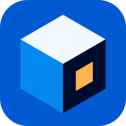
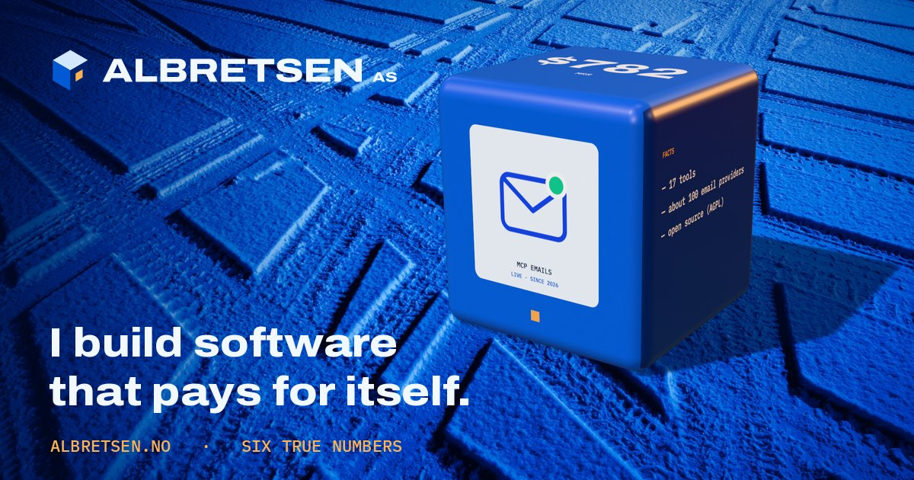
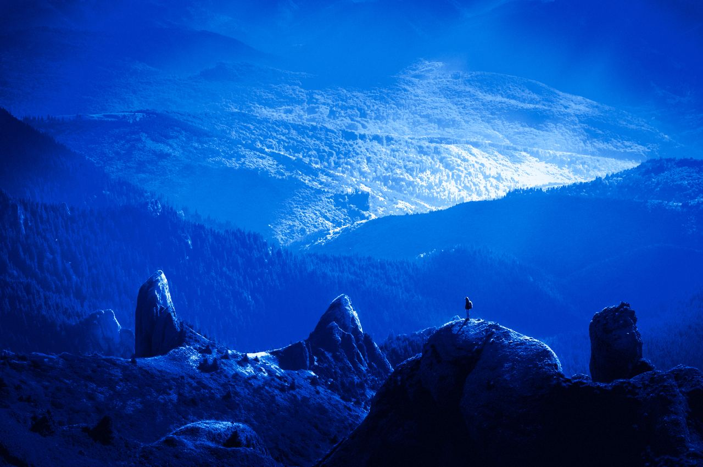
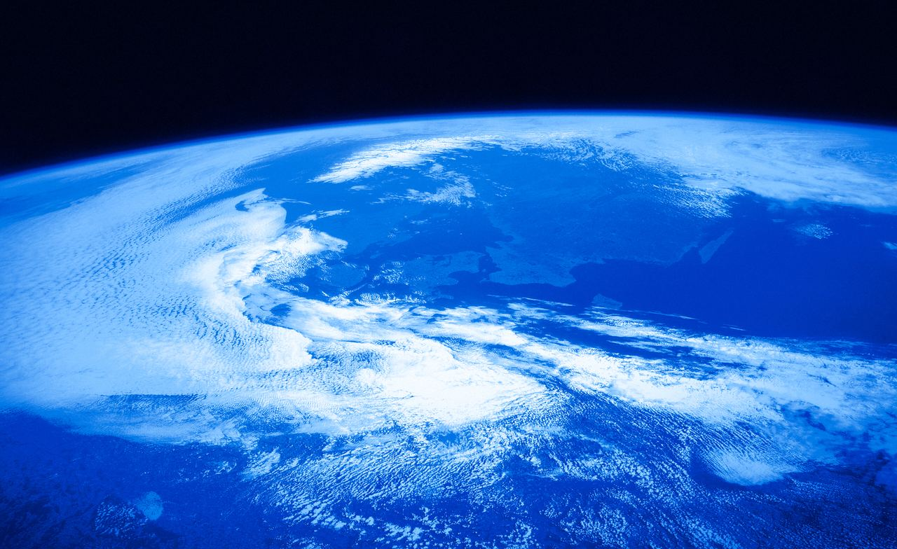
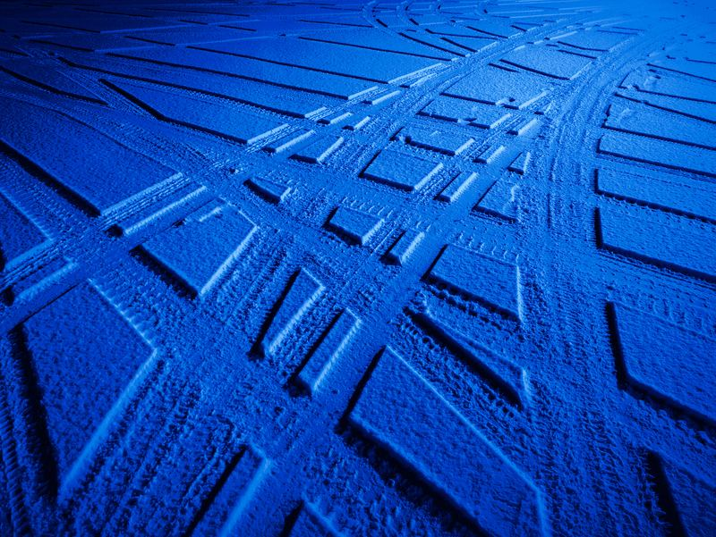
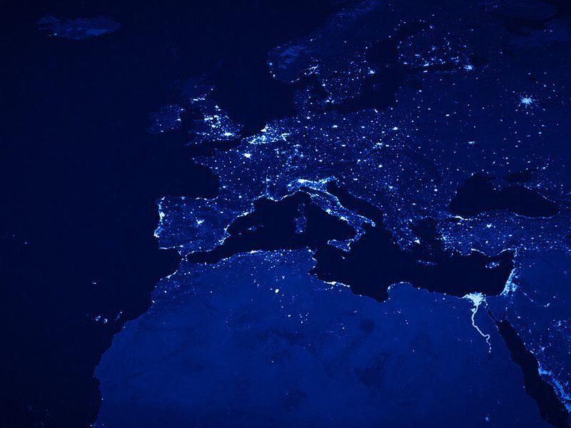
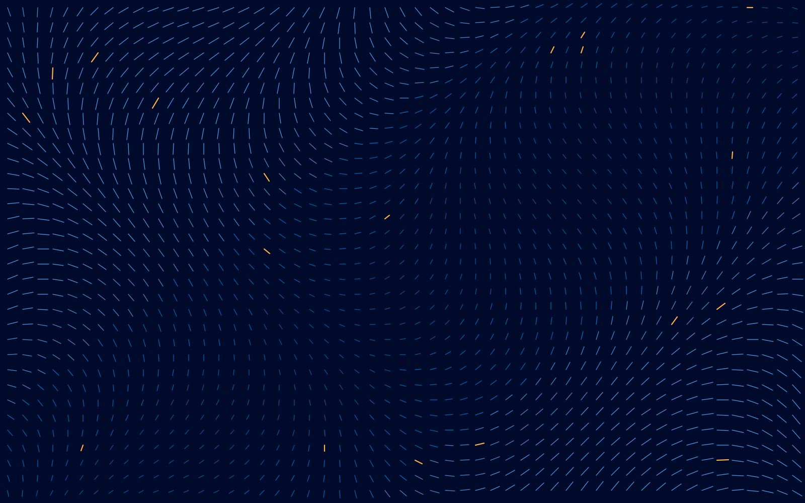
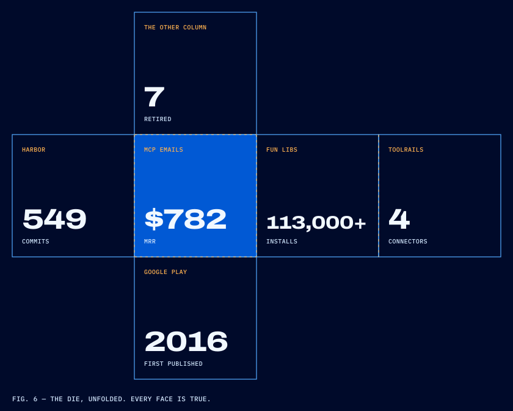
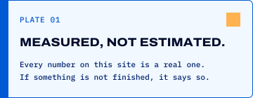
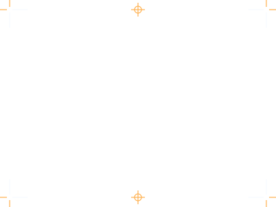

01 · Identity
A cube with one pip.
The mark is the die seen from its corner: paper top, ultramarine sides, one sodium pip for the one number that matters. Wordmark is Archivo at full width and weight, outlined to paths.


02 · Palette
Ultramarine owns the page.
Seed hue 252° in OKLCH. Seven blues from night to paper, and exactly one warm light: sodium, used for a pip, a scan line, a fact label. Never for a block.
03 · Type
Wide, heavy, and plain.
04 · Hero imagery
Real places, one colour.
Public-domain and CC0 photographs graded through a single OKLab ramp: night ink → ultramarine → electric → paper. The day theme prints the same frame as a negative, like a cyanotype. Each image develops in on scroll.


05 · Interactive · centrepiece
Throw it. It lands on a true number.
Left: the Honest Die, CSS 3D transforms only. Grab, spin, throw; it bounces off the frame, loses energy and lands square on one face, upright, via a Motion spring. Right: the same object in three.js, kept live (loads on demand).
interactive/demo.html · 3d/live.html · 3d/render.html (bake stage)
06 · Products
Each product is a die.
The real logo on a paper label, the one number on top, the facts on the side. Rendered in three.js on studio sweeps of the palette. Retired products get a die face with pips instead of a logo: honest, small, still on the record.
07 · Extras
Texture and evidence.






08 · Motion study · motion.css + motion.js
Five moves, all honest.
The die
Inertia while flying, bounce off the frame with 0.55 restitution, wall hits turn speed into spin, then a Motion spring (stiffness 260, damping 17) lands it square and upright. See section 05.
Theme switch
The page is one face of a cube. Switching theme turns it 90° to the other face through a sodium-lit void (View Transitions + CSS 3D). The hero swaps to its negative print.
Photographs develop
Flat ultramarine first, then the frame develops top-down behind a sodium scan line, contrast rising as it goes.
Stops dead
Counts up and stops exactly on the true value. No overshoot, no bounce. A sodium rule marks it exact.
Retired, on the record
A bar is drawn through each retired product, then the word "retired". Nothing is deleted from the list.
- Luma
- PinPoint
- WebVakt